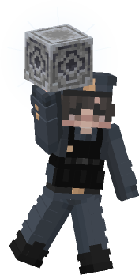
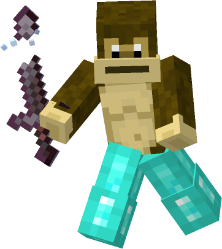

players make the rules
build a hearth and settle disputes among yourselves. admins will only ban cheaters, and it’s recommended to follow the nation’s rules or face banishment

build a hearth and settle disputes among yourselves. admins will only ban cheaters, and it’s recommended to follow the nation’s rules or face banishment

osprey has zero commands. any added features are embedded into the minecraft you know already

loot is earned. all donations help support the server costs, and donors get queue priority when the server is full